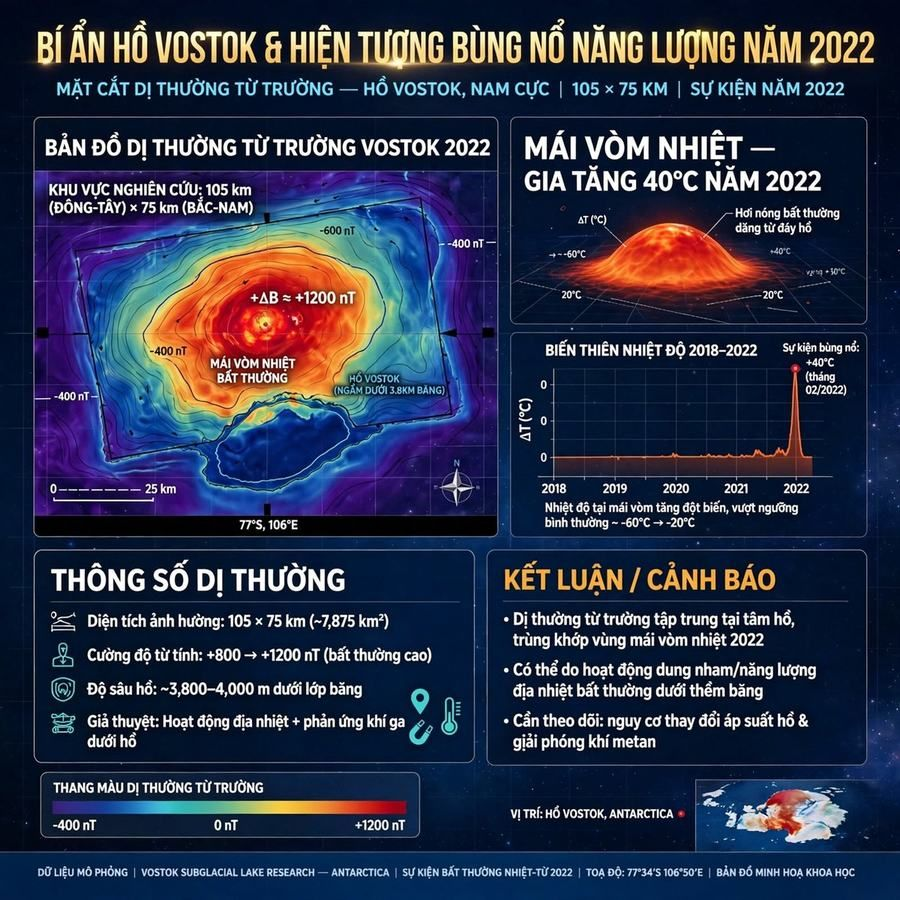
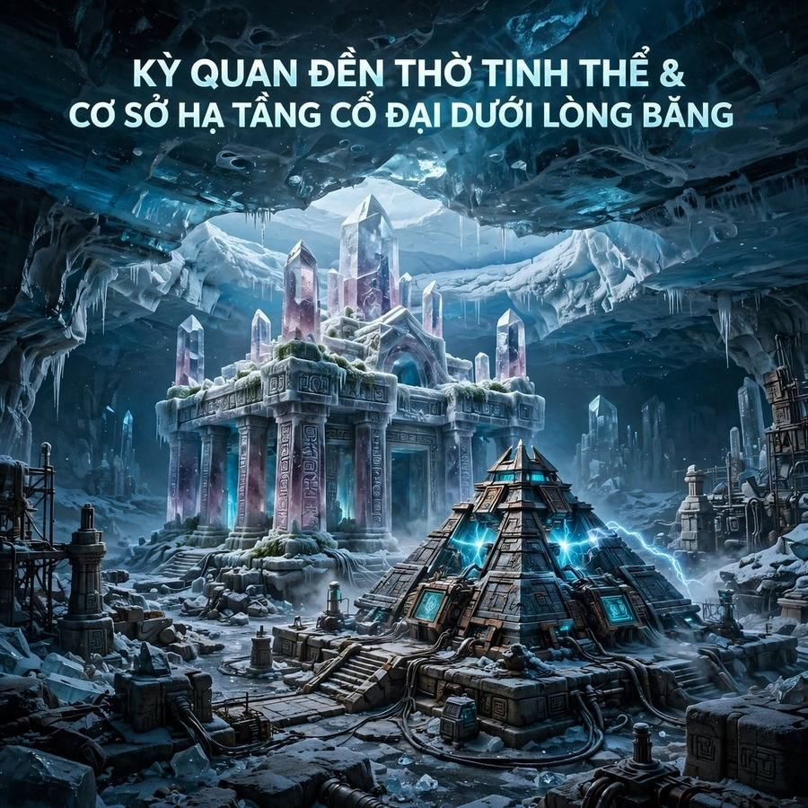
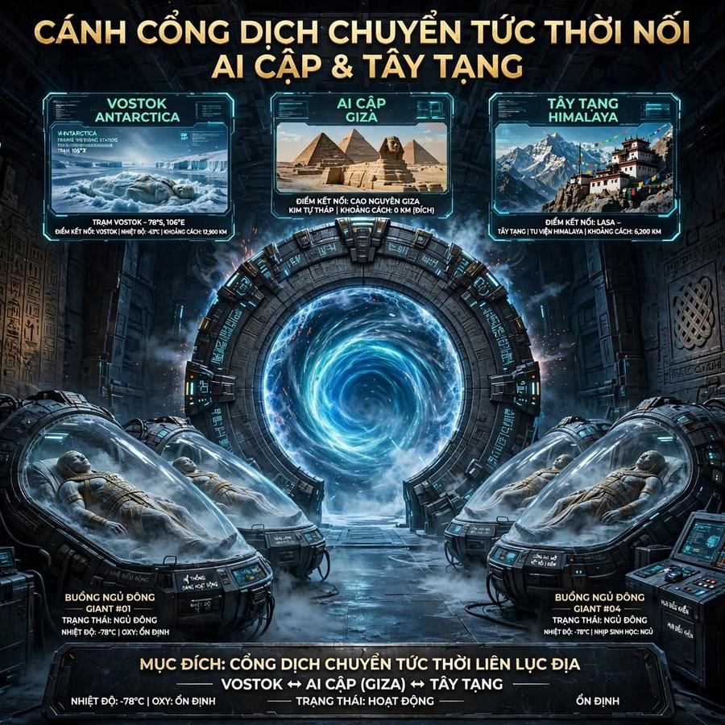
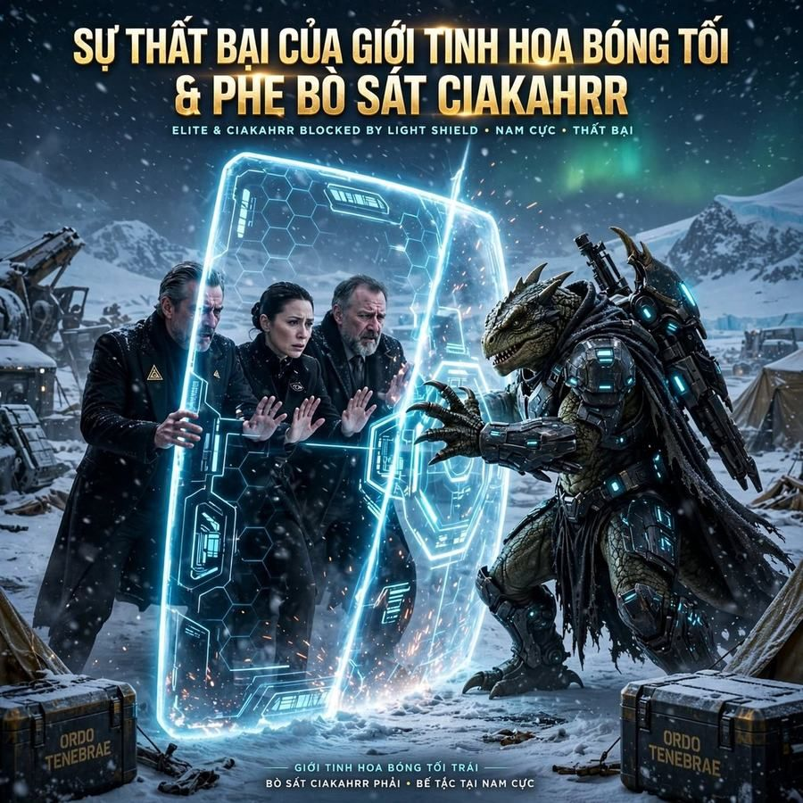
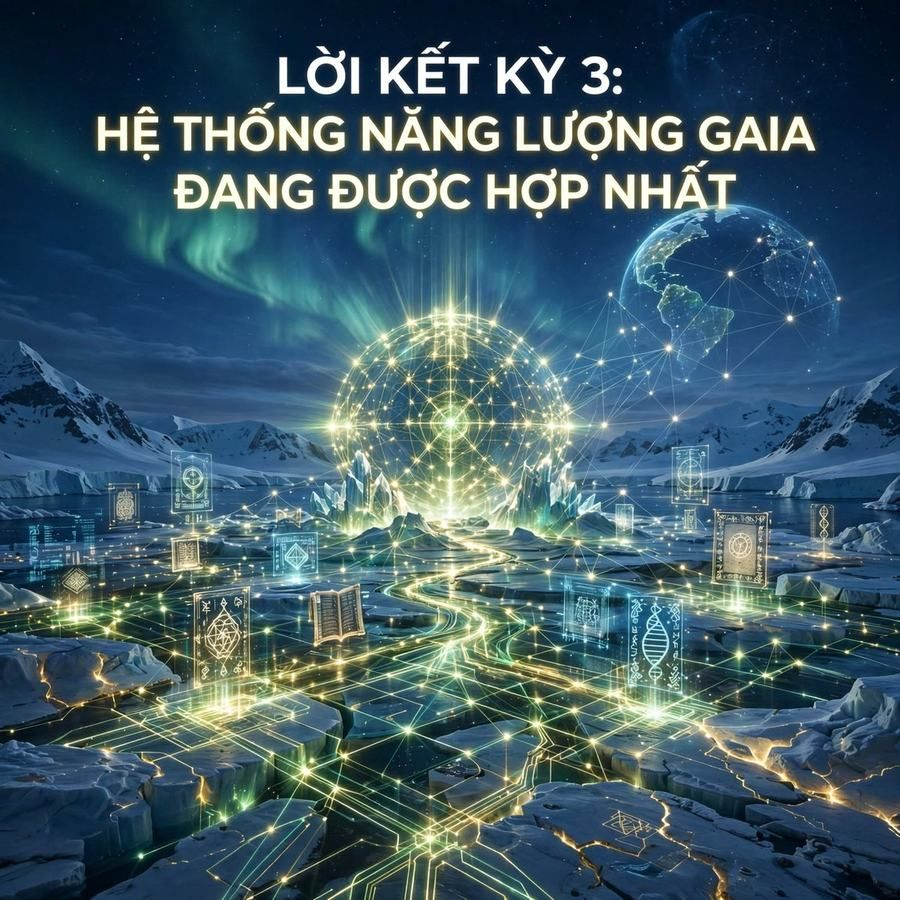

Trang chủ / Chuyên đề 6: Hòm Không Gian Cổ Đại / Kỳ 53
Chuyên đề 6 · Kỳ 53 / 100
HÒM KHÔNG GIAN NAM CỰC (LAKE VOSTOK) & CÁNH CỔNG DỊCH CHUYỂN KHÔNG-THỜI GIAN

Ở Kỳ 2, chúng ta đã cùng nhau thâm nhập vào chiếc Hòm Không Gian khổng lồ dài hơn 1,6 km nằm ẩn mình dưới lòng biển Đại Tây Dương — vùng biển Tam Giác Quỷ Bermuda — cùng sứ mệnh giải mật của nhân chứng quân đội JP khi chứng kiến quả cầu nước lơ lửng kết nối Cổng Sao lên Mặt Trăng và sự thức tỉnh của Viên Ngọc Tinh Thể Atlantis. Hôm nay, chuyến du hành giải mã các di sản cổ đại sẽ đưa chúng ta đến với trung tâm phát ra sóng nhiệt và xung từ trường dị thường mạnh mẽ nhất trên hành tinh: Chiếc Hòm Không Gian Nam Cực nằm sâu dưới Hồ nước ngọt Vostok (Lake Vostok) — khu vực Đông Nam Cực! Điều gì thực sự nằm bên dưới lớp băng dày hơn 3,7 kilômét tại Hồ Vostok? Hiện tượng "Mái vòm nhiệt" (Heat Dome) và dải từ trường bùng nổ đột ngột tại Nam Cực vào đầu năm 2022 có liên quan gì đến sự trở lại của Liên Minh Các Đấng Sáng Lập (The Seeders)? Sự thật về chuyến thâm nhập ngầm của Elena Danaan và Jean-Charles Moyen qua cánh cổng dịch chuyển tức thời kết nối Hòm Vostok với Ai Cập (Giza) và Tây Tạng diễn ra ra sao? Tại sao mọi âm mưu chiếm đoạt công nghệ Hòm Vostok của giới tinh hoa bóng tối và phe Bò sát Ciakahrr đều thất bại thảm hại?
1. BÍ ẨN HỒ VOSTOK & HIỆN TƯỢNG BÙNG NỔ NĂNG LƯỢNG NĂM 2022
Trong nhiều thập kỷ, Hồ nước ngầm Vostok nằm ở độ sâu hơn 3.700 mét dưới lớp băng Nam Cực luôn là tâm điểm chú ý của các nhà khoa học và các chương trình tình báo quốc tế. A. Dị Thường Từ Trường Khổng Lồ (Vostok Magnetic Anomaly)
- Khu Vực Từ Trường Bất Thường 105km x 75km: Các phép đo đạc vệ tinh từ đầu những năm 2000 đã phát hiện ra một dải dị thường từ trường cực mạnh bao phủ góc phía Đông Nam của Hồ Vostok. Cường độ của dải từ trường này lớn đến mức vượt xa mọi cấu trúc địa chất thông thường của vỏ Trái Đất. B. Hiện Tượng "Mái Vòm Nhiệt" Đột Ngột Mùa Xuân 2022
- Nhiệt Độ Nam Cực Tăng Kỷ Lục: Tháng 3 năm 2022, các đài khí tượng toàn cầu bàng hoàng khi ghi nhận nhiệt độ tại Đông Nam Cực (khu vực trạm Vostok) đột ngột tăng vọt tới hơn 40°C so với mức trung bình mùa đông.
- Sự Kích Hoạt Tỏa Nhiệt Từ Tàu Cổ Đại: Sự gia tăng nhiệt độ bất thường này không phải do biến đổi khí hậu tự nhiên, mà là kết quả của việc con tàu Hòm Không Gian cổ đại nằm chìm sâu dưới lòng Hồ Vostok chính thức "thức tỉnh" , phát ra các chùm năng lượng vô hướng tần số cao làm tan chảy các nút thắt băng giá xung quanh!

2. KỲ QUAN ĐỀN THỜ TINH THỂ & CƠ SỞ HẠ TẦNG CỔ ĐẠI DƯỚI LÒNG BĂNG
Khác với các công trình quân sự thô ráp, Hòm Không Gian Nam Cực nằm trong một đại phức hợp đền thờ và đại sảnh kiến trúc tinh thể nguyên sơ. A. Cấu Trúc Đại Sảnh & Máy Phát Kim Tự Tháp
- Đô Thị Tinh Thể Nhiệt Đới Cổ Đại: Trước khi Nam Cực bị đóng băng do thảm họa đảo cực địa chất hàng chục ngàn năm trước, khu vực Vostok từng là một vùng đất nhiệt đới trù phú. Con tàu Hòm Không Gian được đặt trung tâm tại một đại sảnh đền thờ tinh thể khổng lồ, kết nối với một máy phát năng lượng dạng Kim Tự Tháp.
- Lớp Màng Ánh Sáng Tự Bảo Vệ: Con tàu và khu đền thờ được bao bọc bởi một lớp màng từ trường quang phổ cao tần. Môi trường bên trong hang động ngầm luôn duy trì không khí ấm áp, dòng nước tinh khiết và ánh sáng dịu nhẹ tự phát ra từ vách đá thạch anh.

3. CÁNH CỔNG DỊCH CHUYỂN TỨC THỜI (STARGATE) NỐI AI CẬP & TÂY TẠNG
Hòm Không Gian Vostok đóng vai trò là một nút giao thông siêu chiều quan trọng trong mạng lưới giao thông ngầm toàn cầu của Các Đấng Sáng Lập. A. Kết Nối Xuyên Lực Địa Với Sảnh Hồ Sơ (Hall of Records)
- Cổng Sao Nối Trực Tiếp Đến Giza & Tây Tạng: Bên trong Hòm Không Gian Nam Cực tích hợp một Cổng Sao (Stargate) ma trận lượng tử. Cánh cổng này nối thẳng với Sảnh Hồ Sơ bên dưới Tượng Nhân Sư ở Ai Cập, các hang động thiêng dưới dãy Himalaya (Tây Tạng) và vùng núi Bucegi ở Romania. B. Chuyến Du Hành Ngầm Của Elena Danaan & Jean-Charles Moyen
- Dịch Chuyển Tức Thời Xuyên Không Gian: Nhân chứng Elena Danaan và Jean-Charles Moyen đã mô tả chuyến du hành ngầm được lực lượng Liên Đoàn Thiên Hà hỗ trợ dịch chuyển tức thời trực tiếp vào bên trong Hòm Vostok.
- Chứng Kiến Các Buồng Ngủ Đông (Stasis Pods): Bên trong tàu, họ nhìn thấy các buồng ngủ đông bằng tinh thể chứa các sinh mệnh dạng người cao lớn (Bậc Thầy Cổ Đại / Giants) đang nằm yên bình trong trạng thái ngưng đọng thời gian, chờ đợi nhịp đập từ trường hoàn hảo để tỉnh thức.

4. SỰ THẤT BẠI CỦA GIỚI TINH HOA BÓNG TỐI & PHE BÒ SÁT CIAKAHRR
Giá trị công nghệ tối cao của Hòm Vostok đã biến nơi đây thành mục tiêu đánh chiếm hàng đầu của các thế lực tiêu cực trong suốt nhiều thập kỷ. A. Cuộc Họp Bí Mật Bất Thành Tại Nam Cực
- Mồi Nhử Công Nghệ Dành Cho Giới Tinh Hoa: Cuối năm 2021 và đầu năm 2022, nhiều thủ lĩnh thuộc bộ máy kiểm soát bóng tối (Cabal) đã vội vã hạ cánh xuống Nam Cực với hy vọng tìm kiếm con đường tiếp cận công nghệ Hòm Vostok để kéo dài quyền lực.
- Hoàn Toàn Bị Ngăn Chặn: Tuy nhiên, họ hoàn toàn không thể chạm tới hay nhìn thấy con tàu. Lực lượng Liên minh Trái Đất và Liên Đoàn Thiên Hà đã thiết lập vòng rào phong tỏa, buộc giới tinh hoa bóng tối phải chấp nhận sự thất bại và đầu hàng vĩnh viễn. B. Phe Bò Sát Bế Tắc Trước Mã Tần Số Ý Thức
- Thất Bại Trong Việc "Bẻ Khóa" Tàu: Đế chế Bò sát Ciakahrr trước đây từng chiếm đóng khu vực Vostok và nỗ lực bẻ khóa công nghệ của tàu suốt hàng ngàn năm nhưng hoàn toàn bế tắc. Con tàu chỉ phản ứng với Mã gen DNA Paa-Taal và Tần số Trái Tim từ bi, khiến mọi loại vũ khí hay công nghệ xâm nhập thô ráp của phe tiêu cực đều trở nên vô hiệu!

5. LỜI KẾT KỲ 3: HỆ THỐNG NĂNG LƯỢNG GAIA ĐANG ĐƯỢC HỢP NHẤT
Kỳ 3 của chuyên đề 6 khép lại mang đến niềm tin mãnh liệt vào thời khắc chuyển giao của hành tinh:
- Nam Cực Đang Trả Lại Tri Thức Cổ Đại: Hòm Không Gian Hồ Vostok đã bừng tỉnh, đánh dấu sự kết thúc của kỷ nguyên bị che giấu và mở ra cánh cổng kết nối nhân loại với di sản thiên hà nguyên thủy.
- Kích Hoạt Tần Số Bản Thể: Sự thức tỉnh của các Hòm Không Gian toàn cầu đang trực tiếp làm gia tăng dải tần số địa từ Gaia. Khi bạn giữ vững sự bình an, yêu thương và tỉnh thức, bạn đang hòa mình vào cùng một nhịp đập với trái tim của hành tinh!
